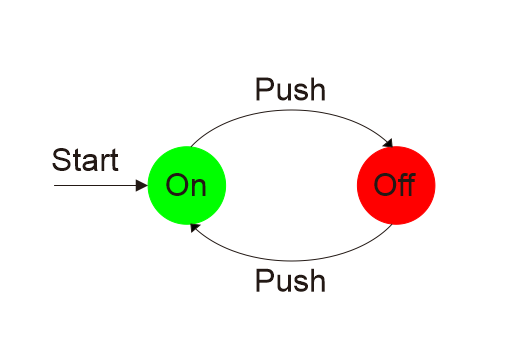

Apasih Teori Bahasa dan Otomata itu?
Teori Automata adalah studi tentang perangkat komputasi abstrak, atau \ mesin.
"Sebelum ada komputer, pada tahun 1930-an, A. Turing mempelajari mesin abstrak yang memiliki semua
kemampuan komputer saat ini, setidaknya sejauh yang mereka miliki. Tujuan Turing adalah untuk menggambarkan
secara tepat dasar antara apa yang dapat dilakukan oleh mesin komputasi dan apa yang tidak dapat dilakukannya.
Kesimpulannya tidak hanya berlaku untuk mesin Turing abstraknya, tetapi juga untuk mesin nyata saat ini.
Teori otomata mempelajari model mesin komputer menggunakan model
matematika. Namun matematika yang digunakan benar-benar berbeda dibanding
matematika klasik dan kalkulus. Model yang digunakan adalah model mesin state
atau model transisi state.
Terdapat tiga topik utama di teori otomata yaitu:
Ada beberapa alasan mengapa studi automata dan kompleksitas merupakan bagian penting dari inti Ilmu Komputer.
Finite Automata adalah model yang berguna untuk banyak jenis perangkat keras dan perangkat lunak penting.
Untuk saat ini, mari kita buat
daftar beberapa jenis yang paling penting:
Model switch on/off digambarkan sebagai berikut :
Model tersebut mengingat apakah switch berada dalam state “on” atau state “off”. Model memungkinkan user untuk menekan tombol yang memiliki pengaruh berbeda tergantung pada keadaan switch: